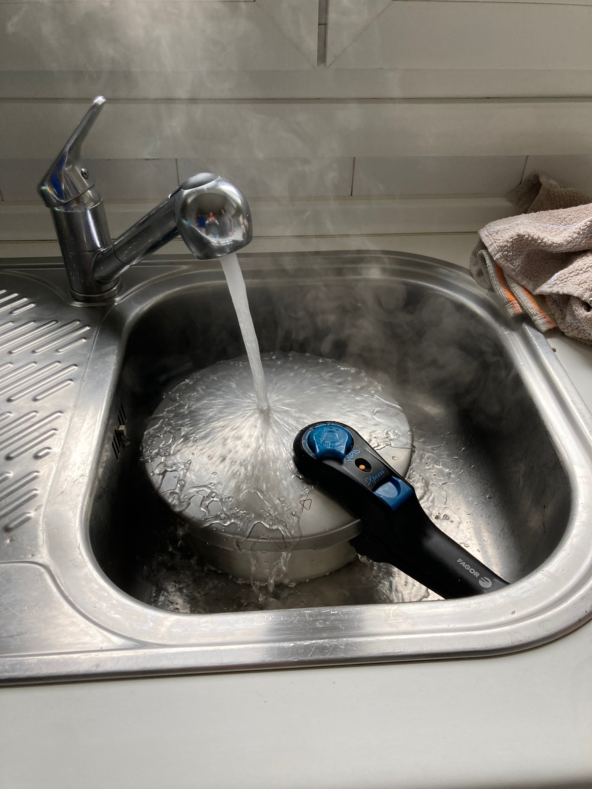
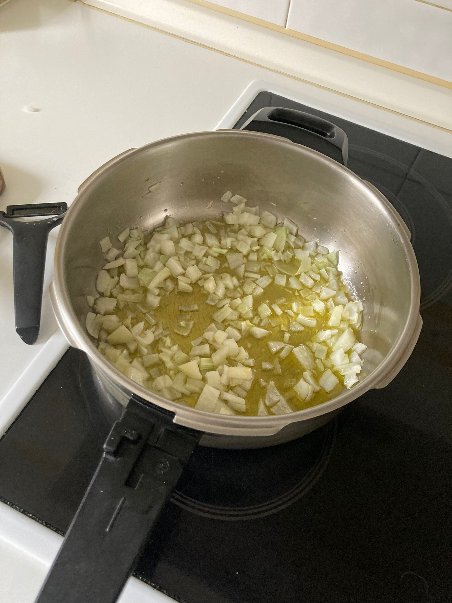
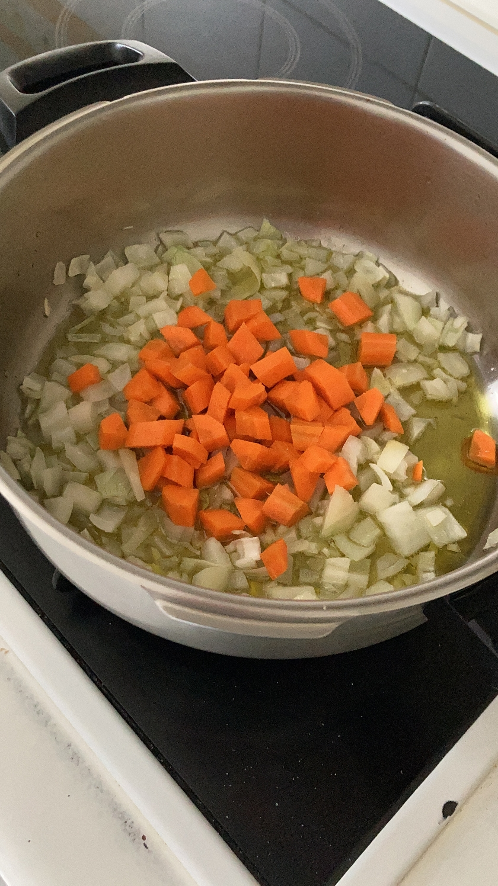
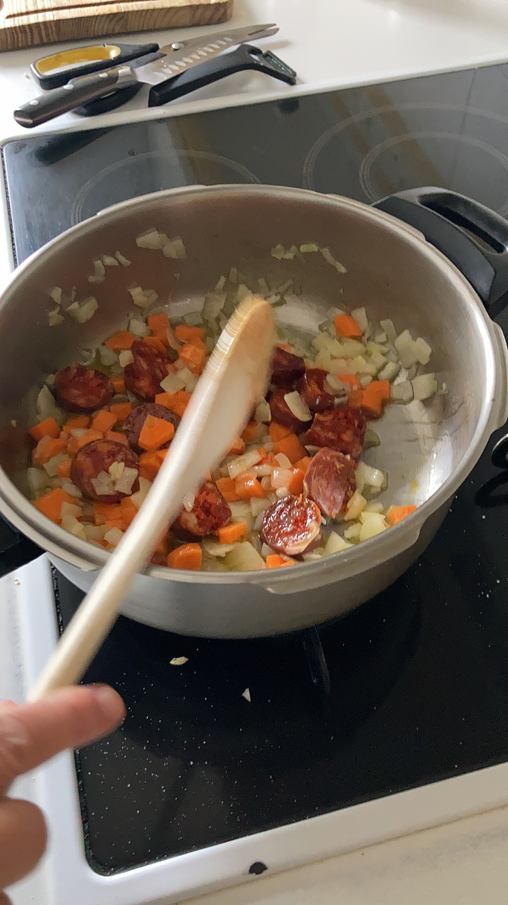
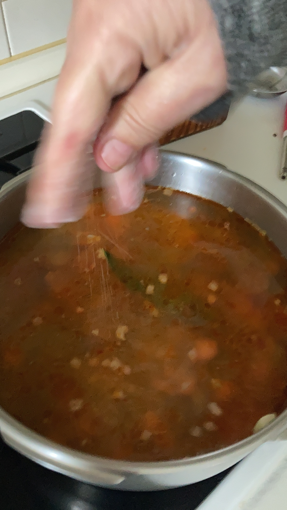
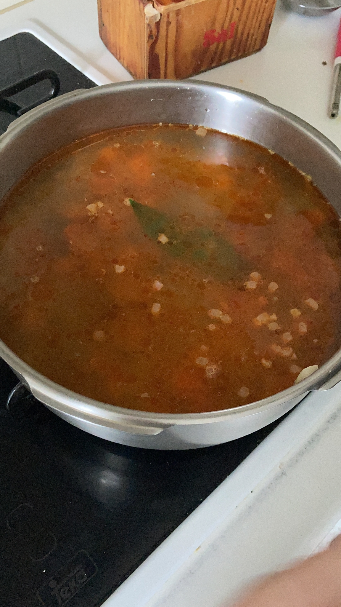
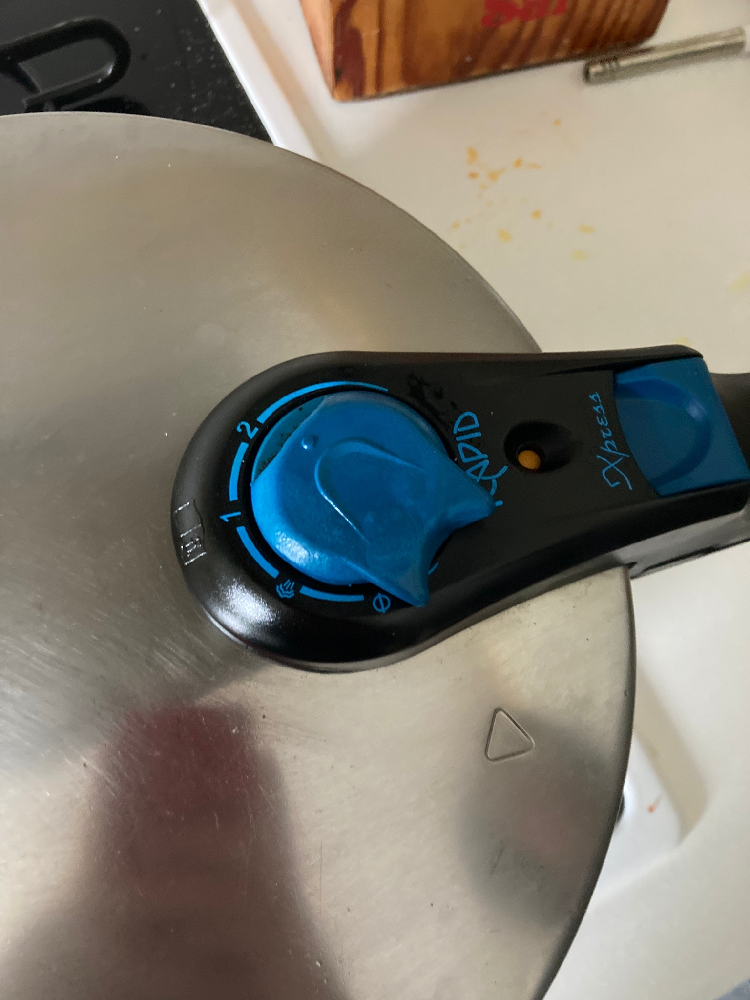

- Cubrir el fondo de la olla de aceite de oliva para sofreír los vegetales a fuego lento. Picar una cebolleta y echarla a la olla. Echar un poco de sal.
- Picar la zanahoria y echarla al sofrito con un poco de sal.
- Cortar medio chorizo palacios y echar al sofrito.
- Echar los taquitos de jamón y la hoja de laurel.
- Añadir 4 o 5 puñados de lentejas.
- Echar agua fría, 6 o 7 vasos de 200ml, y echar sal. Probar el caldo y rectificar la sal al gusto.
- Cerrar la tapa de la olla a presión. Poner la olla a 2atm. Subir al fuego al máximo para que hierva el agua. Cuando salga vapor, bajamos el fuego al mínimo. A partir de ahí contamos 35 minutos. Después de este tiempo, apagar el fuego.
- Antes de abrir la olla, debemos esperar a que el pitorro se baje. Si tenemos prisa, lo podemos poner debajo de un chorro de agua fría hasta que baje. Probamos las lentejas. Si están duras, las volvemos a poner en la olla a presión unos minutos más. Si no, a comer :). 



 
